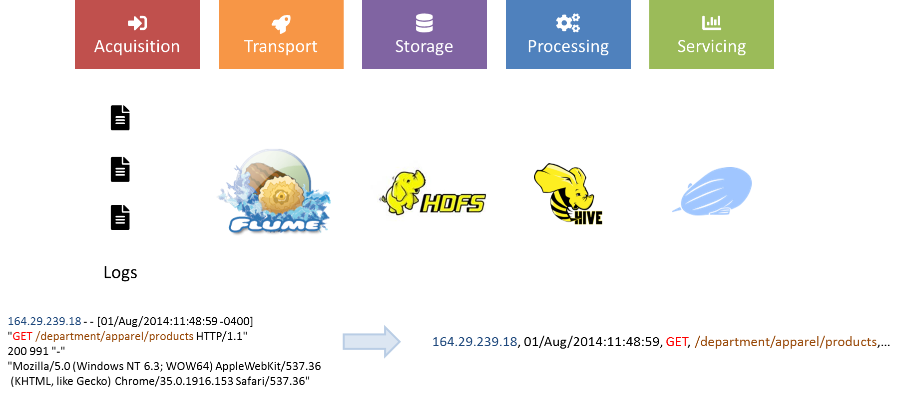
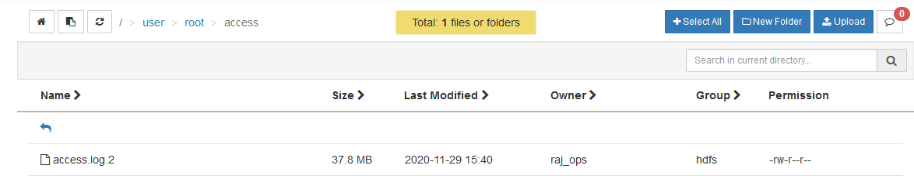
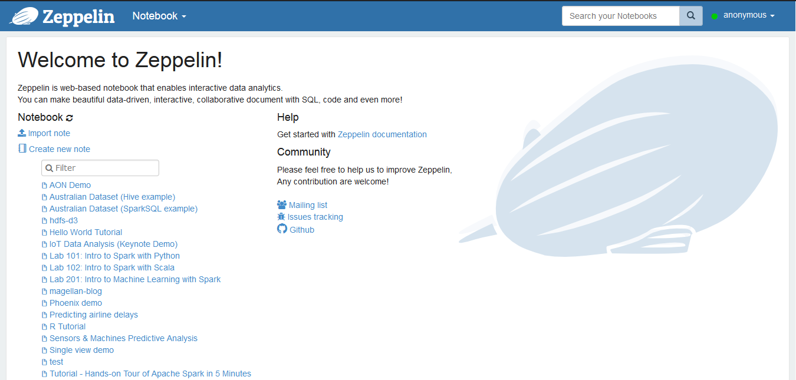
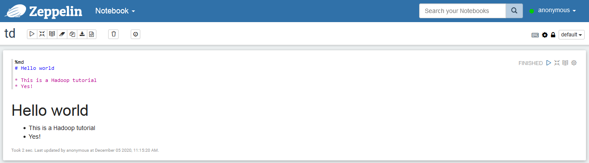
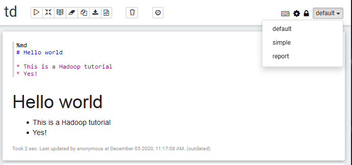
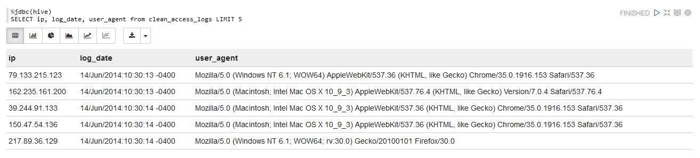
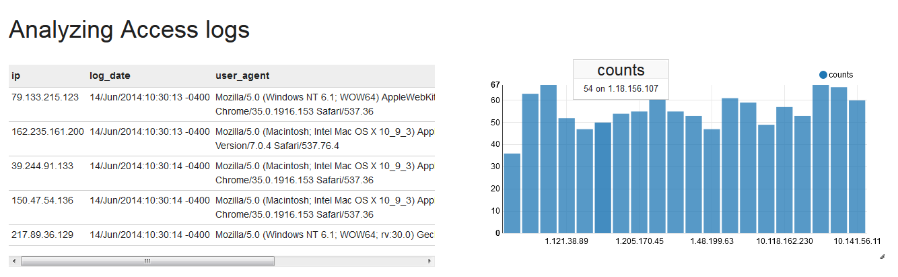

TD2 - Simulating customer behavior analytics in ecommerce
Log analysis is one of the first use cases enabled by Big Data Processing, from parsing web crawlers logs to analyzing customer behavior on websites by rebuilding their sessions from Apache logs.

In this practice session, we will replicate a (albeit smaller) Big Data pipeline to collect and visualize Apache logs.

Saving some memory using Terminal
This tutorial makes heavy use of Hive and Zeppelin to process data. If you are using less than 8 Go of RAM for the virtual machine, try to not use Ambari for this session and only use the terminal to upload and manage data in HDFS. Ambari consumes a lot of memory when acessed so this saves some resources.
Objectives
- Structuring Apache logs with Hive and regex
- Ingesting Apache logs into HDFS in realtime with Flume
- Building a data dashboard with Zeppelin
1. Structuring Apache logs with Hive and regex
Upload data to HDFS
Before building the whole pipeline, let's have a look at a sample of Apache logs.
164.29.239.18 - - [01/Aug/2014:11:48:59 -0400] "GET /department/apparel/products HTTP/1.1" 200 991 "-" "Mozilla/5.0 (Windows NT 6.3; WOW64) AppleWebKit/537.36 (KHTML, like Gecko) Chrome/35.0.1916.153 Safari/537.36"
A sample of Apache logs is available here in the access.log.2.zip file. We will upload this data into HDFS, parse it using an external Hive table over it and run some SQL queries.
- Download and unzip the folder, locally or in your virtual machine depending on how you want to upload the data in HDFS.
- Upload the data in HDFS, at the location
/user/root/access. You should end with/user/root/access/access.log.2.
Help on terminal
[root@sandbox ~]# hdfs dfs -mkdir -p /user/root/access
[root@sandbox ~]# wget https://github.com/andfanilo/hdp-tutorial/raw/main/data/access.log.2.zip
--2020-12-05 14:49:52-- https://github.com/andfanilo/hdp-tutorial/raw/main/data/access.log.2.zip
Resolving github.com... 140.82.121.4
Connecting to github.com|140.82.121.4|:443... connected.
HTTP request sent, awaiting response... 302 Found
Location: https://raw.githubusercontent.com/andfanilo/hdp-tutorial/main/data/access.log.2.zip [following]
--2020-12-05 14:49:52-- https://raw.githubusercontent.com/andfanilo/hdp-tutorial/main/data/access.log.2.zip
Resolving raw.githubusercontent.com... 151.101.120.133
Connecting to raw.githubusercontent.com|151.101.120.133|:443... connected.
HTTP request sent, awaiting response... 200 OK
Length: 3224097 (3.1M) [application/zip]
Saving to: "access.log.2.zip"
100%[==============================================================================================================================>] 3,224,097 14.4M/s in 0.2s
2020-12-05 14:49:53 (14.4 MB/s) - "access.log.2.zip" saved [3224097/3224097]
[root@sandbox ~]# unzip access.log.2.zip
Archive: access.log.2.zip
inflating: access.log.2
[root@sandbox ~]# hdfs dfs -copyFromLocal access.log.2 /user/root/access

- Take a look at the end of the file in HDFS, using the
tailcommand in HDFS in the terminal.
Output
[root@sandbox ~]# hdfs dfs -tail access/access.log.2
6.1; WOW64; rv:30.0) Gecko/20100101 Firefox/30.0"
64.232.194.248 - - [14/Jun/2014:23:43:32 -0400] "GET /support HTTP/1.1" 200 887 "-" "Mozilla/5.0 (Windows NT 6.1; rv:30.0) Gecko/20100101 Firefox/30.0"
138.9.185.141 - - [14/Jun/2014:23:43:32 -0400] "GET /department/golf HTTP/1.1" 200 1075 "-" "Mozilla/5.0 (Windows NT 6.3; WOW64) AppleWebKit/537.36 (KHTML, like Gecko) Chrome/35.0.1916.153 Safari/537.36"
152.208.225.65 - - [14/Jun/2014:23:43:32 -0400] "GET /department/golf HTTP/1.1" 200 1358 "-" "Mozilla/5.0 (Windows NT 6.1) AppleWebKit/537.36 (KHTML, like Gecko) Chrome/35.0.1916.153 Safari/537.36"
84.246.94.164 - - [14/Jun/2014:23:43:32 -0400] "GET /department/fitness/category/tennis%20&%20racquet HTTP/1.1" 200 907 "-" "Mozilla/5.0 (Windows NT 6.1; WOW64; rv:30.0) Gecko/20100101 Firefox/30.0"
167.228.157.189 - - [14/Jun/2014:23:43:32 -0400] "GET /department/outdoors HTTP/1.1" 200 2166 "-" "Mozilla/5.0 (Macintosh; Intel Mac OS X 10_9_3) AppleWebKit/537.36 (KHTML, like Gecko) Chrome/35.0.1916.153 Safari/537.36"
Build a Hive table over the log file
In the previous tutorial, we created a Hive table over CSV files using the keywords ROW FORMAT DELIMITED FIELDS TERMINATED BY ','. The format of the file in HDFS, which Hive will parse on-demand, must be specified at table creation.
Here we will use a regex to extract all the information we need from the log files. To enable parsing files in HDFS using regex with Hive, we use a specific SerDe (for serializer/deserializer) ROW FORMAT SERDE 'org.apache.hadoop.hive.contrib.serde2.RegexSerDe'.
This SERDE is not provided by default, we will need to register a hive-contrib.jar plugin which contains the class. Otherwise you will get Caused by: org.apache.hadoop.hive.ql.metadata.HiveException: java.lang.ClassNotFoundException: Class org.apache.hadoop.hive.contrib.serde2.RegexSerDe not found exceptions.
Let's try this:
- Open a terminal to your Virtual Machine.
- Open a Hive command line:
hive. - Add the
hive-contrib.jarJAR:
ADD JAR /usr/hdp/current/hive-client/lib/hive-contrib.jar;
- Create an external Hive table
intermediate_access_logs(copy-paste the following command):
CREATE EXTERNAL TABLE intermediate_access_logs (
ip STRING,
log_date STRING,
method STRING,
url_site STRING,
http_version STRING,
code1 STRING,
code2 STRING,
dash STRING,
user_agent STRING)
ROW FORMAT SERDE 'org.apache.hadoop.hive.contrib.serde2.RegexSerDe'
WITH SERDEPROPERTIES (
'input.regex' = '([^ ]*) - - \\[([^\\]]*)\\] "([^\ ]*) ([^\ ]*) ([^\ ]*)" (\\d*) (\\d*) "([^"]*)" "([^"]*)"',
'output.format.string' = "%1$$s %2$$s %3$$s %4$$s %5$$s %6$$s %7$$s %8$$s %9$$s")
LOCATION '/user/root/access';
Now whenever you run a SQL query on intermediate_access_logs, Hive will run a MapReduce job by first parsing all files in the /user/root/access with the provided regex, then run your query.
Output
hive> DESCRIBE intermediate_access_logs;
OK
ip string from deserializer
log_date string from deserializer
method string from deserializer
url_site string from deserializer
http_version string from deserializer
code1 string from deserializer
code2 string from deserializer
dash string from deserializer
user_agent string from deserializer
Time taken: 0.997 seconds, Fetched: 9 row(s)
hive> SELECT ip, log_date, user_agent from intermediate_access_logs LIMIT 5;
OK
79.133.215.123 14/Jun/2014:10:30:13 -0400 Mozilla/5.0 (Windows NT 6.1; WOW64) AppleWebKit/537.36 (KHTML, like Gecko) Chrome/35.0.1916.153 Safari/537.36
162.235.161.200 14/Jun/2014:10:30:13 -0400 Mozilla/5.0 (Macintosh; Intel Mac OS X 10_9_3) AppleWebKit/537.76.4 (KHTML, like Gecko) Version/7.0.4 Safari/537.76.4
39.244.91.133 14/Jun/2014:10:30:14 -0400 Mozilla/5.0 (Macintosh; Intel Mac OS X 10_9_3) AppleWebKit/537.36 (KHTML, like Gecko) Chrome/35.0.1916.153 Safari/537.36
150.47.54.136 14/Jun/2014:10:30:14 -0400 Mozilla/5.0 (Macintosh; Intel Mac OS X 10_9_3) AppleWebKit/537.36 (KHTML, like Gecko) Chrome/35.0.1916.153 Safari/537.36
217.89.36.129 14/Jun/2014:10:30:14 -0400 Mozilla/5.0 (Windows NT 6.1; WOW64; rv:30.0) Gecko/20100101 Firefox/30.0
Time taken: 0.29 seconds, Fetched: 5 row(s)
hive>
- Running a query on
intermediate_access_logswill parse files with regex every time, which is time consuming. Create a newclean_access_logstable with the output forintermediate_access_logsas content.- We also optimize the table storage with the ORC format. Using ORC files improves performance when Hive is reading, writing, and processing data.
CREATE TABLE clean_access_logs STORED AS ORC AS SELECT * FROM intermediate_access_logs;
Also build a smaller table so you can experiment on it before running on the full dataset:
CREATE TABLE sample_access_logs STORED AS ORC AS SELECT * FROM clean_access_logs LIMIT 1000;
You're now free to work on the clean_access_logs or sample_access_logs tables 
SQL questions
Choose 1-2 questions to try:
- Can you count the number of occurences for each IP address ?
- Display how many times each product has been bought
- What percentage of IP addresses went to checkout their basket ?
- If you case the date as a Date you should be able to build a web journey of an IP address on the website. For all IP adresses that went to checkout, compute the number of products each has bought before.
Zeppelin, the Big Data notebook
Apache Zeppelin is a Web-based notebook for interactive data analytics and collaborative documents. You can plugin multiple interpreters to run different Big Data engine inside, by default Hive JDBC and Spark are already configured to run.
- Open
http://localhost:9995for a first peek at Zeppelin.

- Create a new note, write some Markdown in the first cell with
%mdas a first line to choose the Markdown interpreter, and run the cell:

- See what happens when you toggle the
defaultview tosimpleandreport.

- Each cell has its own set of settings too. For example, change the width of the first cell to 6:

- Create a new cell, set the interpreter to
Hive JDBCwith%jdbc(hive)and run a SQL query againstclean_access_logsagain.

- Do you see that the
Hive JDBCcell results have a toolbar for displaying graphs? Play with it a bit then try to replicate the following notebook inreportview, with a cell for counting the number of occurences for a few ip addresses.

Recap
- We loaded raw Apache logs into HDFS
- We parsed them by pointing an Hive Table over the logs with a regex deserializer to parse each line
- We saved Hive tables with the extracted info and optimized with ORC.
- We built a Zeppelin dashboard with some info on the contents of the log.
Going back to our objectives
- Structuring Apache logs with Hive and regex
- Ingesting Apache logs into HDFS in realtime with Flume
- Building a data dashboard with Zeppelin
2. Generating logs with Python
- Copy gen_logs to VM
- Run Python simulation
3. Ingesting data in HDFS with Flume
- Configure Flume
- Output in external Hive table
4. Dashboarding with Zeppelin
- TODO